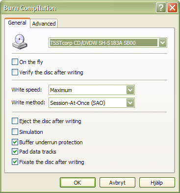

This topic covers the burn/recording options that appear on various places in InfraRecorder, for example when you want to burn a custom compilation, a disc image, or copy a disc.
Altough these options are accessable in many different contexts as mentioned above, they are always presented in a similar way:

General Settings
On The Fly
When recording on the fly the file system will be generated while recording which may increase the risk of write errors. If this option is turned off a temporary disc image will first be created on the hard drive and then recorded to the disc. The preffered setting is usally off, it should gernally only be enabled when you are low on disc space.
Verify the Disc After Writing
Enabling this option will cause InfraRecorder to perform a CRC comparison between the files on your harddrive and the files on the newly recorded disc to make sure that all files have been written to the disc without any problems.
Write Speed
Select the write speed to use when recording the disc. Selecting the Maximum option will automatically select the highest speed that the recorder is capable of.
Write Method
This option selects what method that you want to use when recording the disc. Only the options that your recorder supports will be available in the combo box.
Session-At-Once (SAO) often refered to as Disc-At-Once (DAO) writes all of the data (including lead-in and lead-out) in one pass. Not allowing any interruptions in the data stream. Additional session/data can not be added at a later time. Please note that DVDs must be written using this method.
Track-At-Once (TAO) writes each track independently which requires link blocks between two tracks. Older recorders often forces a two second pause (pregap) between two tracks whereas newer recorders often can adjust the amount of pregap data (see the option described below).
TAO with zero pregap uses the Track-At-Once method described above and tries to set the pregap data length to zero, reducing the number of link blocks between the tracks to a minimal amount.
Raw writing (raw96r) writes data in raw mode using 2352 byte sectors plus 96 bytes of raw P-W subchannel data resulting in a sector size of 2448 bytes. This is the preferred raw writing mode since it gives the best control over the CD writing process.
Raw writing (raw16) writes data in raw mode using 2352 bytes sectors plus 16 bytes of P-Q subchannel data resulting in a sector size of 2368 bytes. If a recorder does not support the raw96r raw writing mode, this is the preferred raw writing mode. This write method does not support CD-Text.
Raw writine (raw96p) writes data in raw mode using 2352 byte sectors plus 96 bytes of raw P-W subchannel data resulting in a sector size of 2448 bytes. This is the less preferred raw writing mode, mainly because only a very few recorders support it and some of these recorders have bugs in the firmware implementation. Don't use this method if your recorder supports the raw96r or raw16 raw writing method.
Important: Please note that raw write methods requires significantly more CPU-time than the other write methods. If your CPU is too slow you might get problems with buffer underruns.
Other Options
Activating the Simulation option will cause InfraRecorder to perform the selected action but with the recorder's laser turned off. This option is recommended if you are unsure if the operation will succeed or not.
Buffer underrun protection is a feature in most newer recorders which allows the writing process to continue even if a buffer underrun error occurr. This feature often have different names by different vendors, for example: Yamaha Lossless-Link, Sanyo BURN-Proof, Ricoh Just-Link, etc.
The Pad data tracks option will when enabled cause 15 sectors containing zeros to be written after each data track and audio track data to be padded to be a multiple of 2352 bytes. The reason why you might want to enable this option is if your CD-reader has problems reading the last sectors of a track or if you intend to use the disc on a Linux ISO-9660 filesystem with the read ahead bug.
Disabling the Fixate the disc after writing option will cause the last session (if using SAO mode) or track (if using a TAO mode) not to be fixated (closed). This can be usefull if you want to record a CD in multiple steps.
Important: Creating a non-fixated disc is not the same as creating a multi-session disc.
Advanced Settings
The Allow overburning option allows you to write more than the official size to a medium. The fact is that most blank media can hold more space than the official size, as the official size of the lead-out area on a disc is 90 seconds (6750 sectors) and a disc usually works if there are at only 150 sectors of lead-out. All media may be overburned by atleast 88 seconds (6600 sectors). Most recorders can only do overburning using the SAO and raw write methods. Some recorders does not allow you to do as much overburning as you would like and limits the size of a disc to certain size. This problem may be circumvented by writing the CD in raw mode because this way the recorder has no chance to find the medium size before starting the recording process.
When the Swap audio byte order option is enabled audio data is assumed to be in byte-swapped (little-endian) order. Some type of recorders for example from Yamaha, Sony and the new SCSI-3/MMC recorders require audio data to be presented in little-endian order, while other recorders require audio data to be presented in big-endian (network) byte order normally used by the SCSI protocoll. The byte order required by your recorder will automatically be detected. The only time you may want to use this option is if your data stream is in Intel (little-endian) order.
Ignore medium size can be enabled when you want to ignore the known size of the medium. It should be used with extreme care. This option implies overburning.
The Set the SCSI IMMED flag option will, as the name suggest set the IMMED flag for certain SCSI commands. Setting the IMMED flag will request the commands to return immediateley while the operation proceeds in the background, making the bus usable for other devices and avoiding a system freeze. This can be usefull on broken system with ATAPI harddisk and CD/DVD-writer or the same bus or with SCSI systems that don't use disconnect/reconnect. These systems will freeze while blanking or fixating a disc or while the recorder is filling up a session to the minimum amount. Please note that not all recorders support the IMMED flag.
Yamaha Audio Master Q. R. is a feature which is used to create high quality audio discs that have less reading problems in Hi-Fi players. It is implemented as a variant of the SAO write mode so it will only work if you select the Session-At-Once (SAO) write method. This feature does not work with all writing speeds and does not allow the same amount of data to be written to a disc due to that fact that the pits on the CD will be larger than normal. If this feature is enabled, a 74 minute CD will have the capacity of 63 minutes and a 80 minute CD will have the capacity reduced to 68 minutes. This feature also works with data discs.
The Forcespeed mode option forces the drive to use the selected write speed no matter of the quality of the medium. Normally modern drives know the highest possible speed for different media and may reduce the speed in order to grant the best write quality. This option should be used with caution, the recorder usually knows better which medium to write at full speed.
The Plextor VariRec write mode allows the user to slightly adjust the power of the laser. If configured properly this may reduce the jitter, resulting in better sound quality and increased playability and compatibility with existing CD-players. VariRec only works when the write speed is set to four.